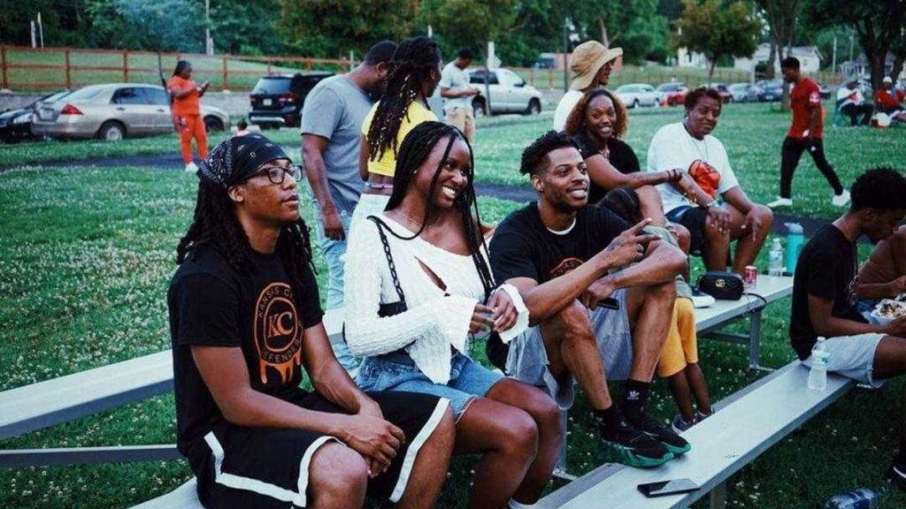
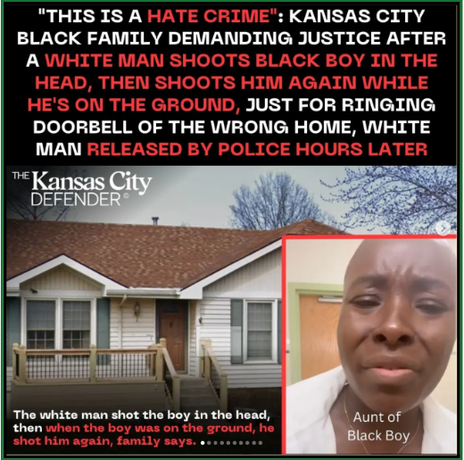
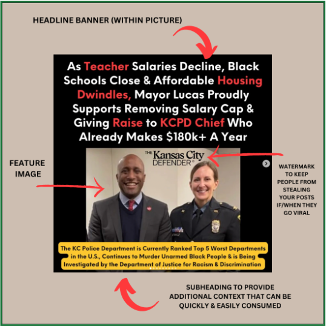
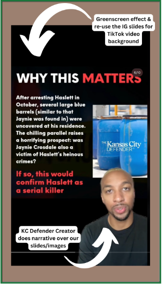

Reimagining Black Journalism in the Digital Age: The Radical Roots and Innovative Practices of The Kansas City Defender
In collaboration with the Reynolds Journalism Institute, The Kansas City Defender (KCD) presents a deep dive into the rebirth of radical Black journalism in the digital age. This project traces our roots in the Radical Black Press Tradition, scrutinizes our editorial philosophy and innovative digital tactics, while showcasing our hands-on community programs.
Dig into our visionary template for a media future that genuinely caters to the needs of our communities and our practical guides to creating a community-centric, digital-first, media organization.
Watch for the click-to-copy buttons to make your own copies of templates and guides ⤵︎
We’ll delve into the histories of groundbreaking media outlets such as The Chicago Defender, Muhammad Speaks, and The Black Panther Party Newspaper, exploring their philosophies and community-building strategies. This exploration will not only honor their legacies but also serve as a foundation for understanding how they engage with their communities, and how we may engage with our own.
We are providing innovative digital strategies to effectively connect with Gen Z, a younger, tech-savvy audience. This includes an analysis of current trends and potential future shifts in digital media, ensuring our approach remains relevant and impactful for everyone to utilize.
This project aims to centralize the wealth of knowledge from the Radical Black Press, making it easily accessible and serving as a resource for those who wish to innovate and reinvent journalism in a way that best serves our communities.
Together, we can redefine the norms of media, celebrate our diverse narratives, and build a more equitable landscape.
Explore the journey above ⤴
Radical Roots: How the Radical Black Press Tradition Informs KCD's Journalistic Philosophy, Storytelling, and Community Programs
Media organizations were complicit in the slave trade and profited off of chattel slavery; a powerful newspaper publisher helped lead the deadly overthrow of a local government in Wilmington, North Carolina, where Black people held power; racist journalism has led to countless lynchings; southern broadcast stations have opposed integration; and, in the 21st century, powerful social- media and tech companies are allowing white supremacists to use their platforms to organize, fundraise, recruit and spread hate. - Media 2070
“The media’s the most powerful entity on earth. They have the power to make the innocent guilty and to make the guilty innocent, and that’s power. Because they control the minds of the masses. The press is so powerful in its image-making role, it can make the criminal look like he’s the victim and make the victim look like he’s the criminal. If you aren’t careful, the newspapers will have you hating the people who are being oppressed and loving the people who are doing the oppressing.” - Malcolm X
Born in the wake of the 2020 uprisings, The Kansas City Defender emerged out of an urgent necessity. As Black individuals, youth, organizers, and abolitionists, the unprecedented events of 2020 laid bare an undeniable truth: we could not rely on white-controlled legacy media to advocate, empathize, or even humanize us. When the George Floyd uprisings surged through the nation, Kansas City experienced what many Black communities did—a barrage of dehumanizing, racist attacks from mainstream media. Our righteous indignation was belittled as "complaints," and our uprisings decontextualized as "riots."
This disservice is nothing new. The inaugural Black newspaper in the U.S. was born out of similar frustrations. Samuel Cornish and John Russwurm, founders of Freedom's Journal in 1827 wrote, "We wish to plead our own cause. Too long have others spoken for us." This sentiment is deeply woven into the ethos of The Kansas City Defender. Mainstream media and white legacy news outlets, rooted in a history dating back to the era of slavery, has long criminalized us, dehumanized us, and even been weaponized to incite massacres and genocide. In 2021, as in 1827, we realized the need for something transformative—a media outlet that was fresh, young, and unapologetically Black.
Yet, innovation often requires paying homage to tradition. In constructing our editorial philosophy and storytelling style, we were deeply inspired by the 20th-century radical Black press.
Standing on the Shoulders of Giants
The Kansas City Defender is more than a media outlet; it's a radical, Abolitionist community organization. While many Black legacy newspapers have increasingly veered towards moderation, aligning themselves with older demographics and the Black bourgeoisie, we opted for a different path—a path carved by the radical Black press of the 1800-1900s.
In fact, while many are familiar with the Black Panther Party (arguably the most well-known revolutionary organization in American history), an often obscured fact is that their most potent operation was not their guns or breakfast program, but their newspaper. Titled 'The Black Panther,' it served as a tool for mass political education, bringing awareness to their revolutionary survival programs, and recapturing the narrative to respond to vicious attacks from the white press. It was through the paper’s pages that they disseminated their revolutionary ideals, illuminated their timeless aesthetic and spoke directly to The People. Similarly, the Abolitionist movement of the 19th century relied heavily on Black newspapers like Frederick Douglass’s “The North Star.” These radical presses served as powerful platforms for advocacy, agitation, and mobilization, aiding tremendously in the struggle against slavery.
Another lesser known fact is that Muhammad Speaks, founded by Malcolm X, was the most widely circulated Black newspaper in United States history. It served as the official publication of the Nation of Islam and played a crucial role in disseminating the organization's philosophy, news, and views on social issues pertinent to the Black community.
Throughout the 60’s, other Black radical papers like Black World, and Freedomways were more than newspapers; they were epicenters of Black thought, revolutionary ideology, and perhaps most importantly, community. They championed the causes of Black artists, intellectuals, freedom fighters, and grassroots organizers. By doing so, they redefined public discourse, offering a community-oriented, anti-colonial interpretation of politics, culture, and racial progress. One of their most indelible impacts was in the arena of political education, sculpting a generation of Black Power activists and revolutionaries.
Similarly, when we first ignited The Kansas City Defender, our aim was not to be passive observers but active participants within the community. Starting from the heart of 18th & Vine, Kansas City's historically Black jazz district, we built trust and rapport with the streets. Parties, bars, liquor stores, even strip clubs—no space was off-limits for us because no space is off-limits for the Black experience. Armed with only a rented DSLR camera, I, along with my lifelong friend and business partner, roamed the streets of our city conducting impromptu street interviews and shooting free promotional videos for anyone who would let us. Soon, we began collaborating with the city's top rappers, DJs, promoters, and even its leading hip-hop radio host. Despite offering high-quality, professional grade videos, we asked for nothing in return, only that they support our mission to uplift Black people.
A Legacy Reimagined: How The Kansas City Defender Honors and Innovates the Radical Black Press Tradition
At The Kansas City Defender, our very name is an homage to the Chicago Defender—one of the most iconic Black newspapers in American history. While they touted themselves as "The World's Greatest Weekly," we echo that audacious spirit by declaring ourselves "The World's Most Innovative Black News Startup."
Community building sits at the core of what we do, much like the Black Press of the 20th century, which often stood as the second most influential institution in Black communities, following only the Black church. Similar to these historic outlets, we do not just report news; we are building community. Through Community Programs like Basketball Tournaments, Free Clothing Programs, and Open Mic Nights, we're laying the bricks and mortar for a new, radical Black community, both online and offline.
Our reporting—rejects traditional notions of objectivity. In the words of Phyl Garland from the documentary Soldiers Without Swords, "The black press was never intended to be objective because it didn't see the white press being objective. It often took a position. It had an attitude. This was a press of advocacy. There was news, but the news had an admitted and a deliberate slant." Just like the newspapers that inspired us, we are unabashedly and unapologetically on the side of Black liberation, justice, and internationalism. Our news isn't just news; it's actionable information for the survival and flourishing of Black folks in our region.
While the Chicago Defender became iconic for its acerbic language and audacious, red headlines, we've adapted this for a new age. Our headlines, although not in red ink on a physical page, are just as red, bold and unmissable on the digital platforms of Instagram and TikTok.
Finally, just like our predecessors, we aim to be a conduit for racial community, self-determination, liberation, and achievement. Through features like "Black Student of the Month," "Black Business Highlights," and "Black Student Outfit of the Week," we're amplifying voices and stories that the mainstream media persistently neglects. We're not merely echoing the historic ethos of Black newspapers; we're also elevating it, optimizing it for a new era.
We stand on the shoulders of giants, but our eyes are firmly set on the future—a future where The Kansas City Defender isn't just a part of Black history but a critical catalyst for Black futures.
Social First & Digital Innovation
Our Philosophy & Broader Strategy
A 12 step cheat sheet for social posting
Our Social First strategy involves a blend of cultural integration, community engagement, and a deep understanding of the audience's interests and values. This approach not only enriches the content but also fortifies the outlet's position as a vital, trustworthy, and culturally attuned voice in the community.
In the rapidly evolving digital news landscape, understanding and adapting to the unique dynamics of each social media platform is crucial. First, we’ll look at some practical examples that illustrate our approach at The Kansas City Defender, particularly in why we tailor our content for different platforms and audiences, then we will look at specific tactics.
A prime example of our strategy in action is seen in the story below when we chose to publish on Instagram before our own website. We do this regularly depending on the content of the story and who we think it will appeal to. This is the story of the tragic shooting of 16 Year Old Black Student, Ralph Yarl. In this particular story, the decision was rooted in a clear understanding of our audience demographics: our Instagram followers significantly outnumber our website visitors. Moreover, the subject of the story – a racist shooting of a high-school student in the Kansas City area – directly resonated with our primary Instagram audience, which largely comprises high school students. Within 24 hours our Instagram post had been shared by Shaun King, Bernice King.

Instagram Screenshot
: April 15th, 2023. The first story to mention all aspects of the racist shooting of Ralph Yarl.
: April 15th, 2023. The first story to mention all aspects of the racist shooting of Ralph Yarl.
This choice underscores a fundamental principle in our digital strategy: be where your target audience is and deliver the stories they seek. If you want to reach young people, understand that many of them now get their news exclusively from TikTok & Instagram and rarely if ever, visit news websites.
A vast majority of our social media users will never visit our website, their only touch-point with our brand is through social media. In other words, if our brand did not have an active or strong presence on these platforms, we would be invisible or even nonexistent to them. This is, of course, certainly not to say that driving traffic to the website isn’t important, it’s instead to say that that cannot take precedence over curating an effective platform-specific strategy.
This requires us to shift from the often- idolized paradigm that the sole end-goal across our digital properties is to drive people back to our website. When investing time and resources in growing a platform-specific audience, the end goal is truly building community with the audience on that platform. Audiences can sense whether or not brands are authentic in this goal, or whether you are just trying to send them somewhere else. (Not to mention, many social media platforms send negative signals to posts that attempt to drive traffic off-platform, as it cuts into time their users spend on their own platform.)
An example of why the platform experience itself must be prioritized is that we have broken viral stories that have reached over 750,000 impressions in one post on Instagram, yet that same story received only five likes and zero shares on Facebook, and only 7 people who engaged with the instagram post clicked on the link in our bio to read the full article on our website. This particular story became a national story covered by CNN, NBC News and more, but we published it exactly the same across all of our social media platforms (this was before we learned our lesson). So the Facebook & Twitter post was completely ineffective because we tried to use the same exact banner-caption-picture-framing we used on IG. Banner text inside of images (as you can see below) works very well on IG, but not nearly as well on Facebook or Twitter. High quality images themselves with more information in the caption is more effective on Facebook, while Twitter requires a unique way of presenting information in the thread format. On IG, learning to tell a story using the carousel slides feature is also incredibly valuable.
While our website and email newsletter are our largest drivers of revenue, we viewed it as necessary to de-prioritize growing those platforms in our earlier stages, and instead focus on growing our brand visibility, community, trust, and engagement with our target audience on the platforms they spend the most time on.
A 12 step cheat sheet for social posting
- Prioritize the platform you post on according to the Audience Demographics and Interests on that platform:
- Insight: Tailor the platform of story release according to the demographic makeup and interests of your audience.
- Example: Publishing a story on Instagram first due to its larger high school audience, particularly when covering a story related to high school students.
- Strategy: Identify and understand the primary audience on each platform. Use this knowledge to decide where a story should be published first.
- Craft your headline for Maximum Impact:
- Insight: Given the overwhelming amount of content users scroll through daily, headlines should be bold, direct, and quickly graspable.
- Learn from Hip Hop Blogs and Black Digital Media:
- Insight: Hip hop culture and Black digital media have developed unique methods of communicating information online.
- Strategy: Draw inspiration from the aesthetics, language, and presentation styles of platforms like The Shade Room, Baller Alert, Worldstar and other smaller blogs for effective storytelling.
- Take care Packaging Information:
- Insight: The visual presentation and tone of the content are crucial in engaging with younger and Black audiences.
- Strategy: Employ a personable, unapologetic tone with bold visuals for Instagram. Diversify the presentation style based on the platform, like using informative slides on Instagram and short-form videos on TikTok.
- The below examples include how we package our posts across platforms on (1) Instagram, (2) TikTok, & (3) Twitter/X
-  
-
-
-
-
-
-
-
Liberation Reporting & Defying Editorial Norms
Eight steps you can implement
We are incredibly intentional about the way we cover cops, “crime” and state violence. Our editorial decision making in this realm is largely informed by our Abolitionist Writer's Guide and tools like the “Don’t Be a Copagandist” media resource compiled by Mia Henry, Lewis Raven Wallace, and Andrea J. Ritchie.
- Avoid Acting as a Stenographer for Police: Don’t simply regurgitate police narratives unchecked, especially when police are implicated in violence. Be as skeptical of their reports as you would be of any regular community member’s eyewitness testimony.
- Use of Language: We advise against using passive language or police terminology that removes the implication of guilt, such as "officer-involved shooting,” or “Man dead after struck by bullet after police confrontation.”
- Question Police Statistics: Challenge the reliability of police statistics on crime, highlighting how they can be manipulated or misrepresentative.
- Avoid Fear-Mongering: Cautions against reinforcing fear about interpersonal violence which can justify expanding police powers.
- Criminalizing Language: We warn against using dehumanizing police terminology and stereotypes, especially regarding race and socioeconomic status.
- Mug Shots: We almost never publish mugshots, as they perpetuate criminalization.
- Skepticism of Police "Solutions": We encourage skepticism towards police-proposed solutions to violence, such as increased surveillance or technology, which may not be effective.
- Respecting Privacy: Stress the importance of respecting names, pronouns, and requests for anonymity, especially concerning vulnerable groups.
As the Black Press continues to evolve, our commitment to radical truth-telling and advocacy must remain unshaken. We stand not only as guardians of our community's narratives but also as architects of a future where Black voices lead the discourse. Our approach is not merely about countering misinformation; but in engaging in Black radical imagination.
In a world where mass media has long been shaped by a lens of white colonial values, the Black Press emerged not just as an alternative, but as a militant revolutionary technology.
“If you can control a man’s thinking, you do not have to worry about his action,” - Carter G. Woodson, The Mis-Education of the Negro, 1933
The Birth of 'Objective' Journalism: A White Ideology
The most powerful propaganda is that which you do not perceive as propaganda. In fact, the myth of objectivity is perhaps the most powerful form of propaganda because it convinces audiences of its harmlessness thus disarming the reaction to engage in critical thought when engaging the object of media.
While the emergence of ‘objectivity’ can be traced back to the rise of the penny press, two of the most powerful institutions which played vital roles in professionalizing the philosophy of objectivity in journalism, were The Associated Press (AP), and the Society for Professional Journalists (SPJ).
The Associated Press, Founded in 1846, played a significant role in shaping modern journalistic standards, particularly the concept of objectivity. The AP has been influential in setting ethical and professional standards in journalism. Its stylebook and guidelines continue to be widely adopted in newsrooms around the world. If you have worked in a newsroom or gone to journalism school I'm sure you have encountered these.
Their cooperative model meant they had to be palatable to a wide range of member newspapers with differing political leanings (nearly all were still white newspapers). This requirement fostered a style of reporting that aimed to be less opinionated, contributing to the development of so-called “objective” journalism.
Yet, since its inception, AP was as complicit as any white-led newspaper of its era.
The Associated Press, Founded in 1846, played a significant role in shaping modern journalistic standards, particularly the concept of objectivity. The AP has been influential in setting ethical and professional standards in journalism. Its stylebook and guidelines continue to be widely adopted in newsrooms around the world. If you have worked in a newsroom or gone to journalism school I'm sure you have encountered these.
Their cooperative model meant they had to be palatable to a wide range of member newspapers with differing political leanings (nearly all were still white newspapers). This requirement fostered a style of reporting that aimed to be less opinionated, contributing to the development of so-called “objective” journalism.
TITLE

Explore the steps below ⤵︎
TITLE
Explore the steps below ⤵︎
TITLE
Explore the steps below ⤵︎
TITLE
Explore the steps below ⤵︎
TITLE
FILLER EVENT
Explore the steps below ⤵︎
TITLE
Explore the steps below ⤵︎
About the author: Ryan Sorrell
he/him/his or they/them/theirs.
Ryan has a diverse background including working at one of the nation’s most esteemed Black think tanks, one of Chicago’s top B2B Tech PR agencies, a top 3 global PR firm, and founding Kansas City’s largest Black-led direct action group during the 2020 uprisings. During Ryan’s professional career he’s consulted brands such as Facebook, Samsung, Amazon and Google.
He is a recipient of the Civil and Human Rights Award recognized by the Urban League of Kansas City, Southern Christian Leadership Conference and NAACP. He has also engaged in a number of public talks as a prison industrial complex Abolitionist thinker including on; NPR, PBS, a Kansas City Art Institute Lecture, a lecture at University of the Arts London, the Annual International Symposium (Digital Ethics for a Sustainable Society), as well as the T-Mobile Speaker Series.
Have questions or want to contribute to the guide? Email us.